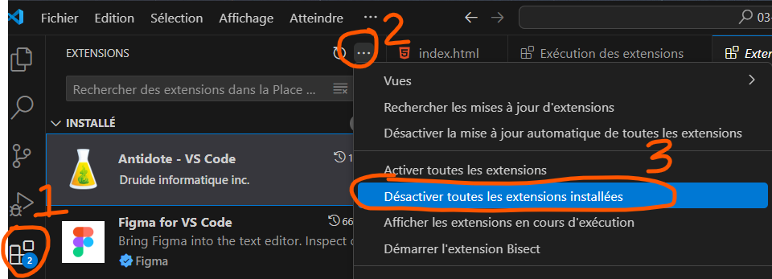

Pour cet exercice vous allez compléter la mise en page d'un centre de commandes spatial en utilisant les propriétés CSS vues en classe cette session du cours 1 à 5.
ou Lien vers la vidéo à afficher plein écran.
Fichiers
Couleurs 🎨
| Turquoise |
|
| Bleu bébé |
|
| Fushia |
|
Dans votre code CSS, vous devez situer le # du requis et vous devez commenter ce que vous faites : expliquez ce que vous ciblez et ce que vous appliquez comme styles. Allez-y brièvement dans vos mots (bref ne pas copier-coller la consigne, vous devez démontrer que vous comprenenz ce que vous faites). Exemple: Voici un exemple:
À l'aide de flexbox, placez les éléments de la page tel que démontré dans l'aperçu grand écran ( DESKTOP). Prenez le temps de constater la façon dont les éléments se replacent les uns par rapport aux autres: lorsque vous redimensionnez votre fenêtre en largeur et en hauteur, le résulat final doit se placer tel que démontré dans l'aperçu DESKTOP. Certains boutons du .control-panel ont une couleur d'arrière-plan différente, soit #64ddff. Veuillez utiliser une des techniques de sélecteur qu'on a veut cette session pour changer leur couleur. Vous ne devez utiliser un seul sélecteur. Assurez-vous que la couleur d'arrière-plan du bouton au survol reste la même pour tous les boutons, soit #ff00fb (vous pouvez utilisez un autre sélecteur pour cela). Toujours au survol des ces boutons, la couleur de bordure et de l'ombre portée de la balise parent .dashboard revient rose #ff00fb pour la bordure et rgba(255, 0, 251, 0.5) pour l'ombre. Vous devez utiliser un sélecteur de pseudo-classe avancé approprié pour appliquer ces styles. La taille de texte du h1 doit être relié à la largeur de la fenêtre du navigateur. Cependant, vous devez vous assurer de lui appliquer une taille minimum de 1.4rem et maximum de 2.2rem afin que le texte reste lisible et ne prenne pas toute la place. Faite de même pour le h2 qui se trouve dans la section .main-display avec un minimum de 1.3rem et un maximum de 1.6rem.
- [8%] Sur grand écran (desktop), en mode statique (c'est-à-dire sans bouger la dimension de la fenêtre), chaque élément à positionner est identique à l'aperçu DESKTOP initial. La technique flexbox a été bien utilisée partout.
- [3.25%] Sur grand écran (desktop), en changeant la dimension de la fenêtre horizontalement ou verticalement, les éléments suivent ce qui est prévu initialement via l'aperçu DESKTOP. La technique flexbox a été bien utilisée partout.
- [4%] Sur écran mobile, chaque élément à positionner est identique à l'aperçu MOBILE initial. La technique flexbox a été bien utilisée partout.
- [4%] Les 2 polices de caratères sont bien importées et appliquées selon les consignes respectives pour chacune.
- [4%] Les boutons du .control-panel ont la bonne couleur d'arrière-plan et elle est appliquée en suivant les requis. Même chose pour l'effet sur le .dashboard au survol de ces boutons.
- [3.25%] Les tailles de texte du h1 et du h2 situé dans .main-display sont bien reliées à la largeur de la fenêtre en incluant la technique vue en classe pour appliquer une minimum et un maximum.
- [3.5%]
- L'étudiant n'a pas fait de détour et a écrit, le plus possible, le code minimum pour arriver au résultat.
- Code CSS bien commenté, l'étudiant sait démontrer qu'il comprend ce qu'il fait via ses commentaires.
- Code bien indenté (alignement des propriétés CSS à l'intérieur des { }).
- L'étudiant a utilisé des chemin d'accès relatifs et non absolus (qui débutent par /).